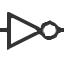

 NOT Gate
| Library: | Gates | ||||
| Introduced: | 2.0 Beta 1 | ||||
| Appearance: |
|


Behavior
The NOT Gate emits the complement of whatever input it receives. The way data is presented on the output is defined by the output value attribute. The truth table for a NOT gate is the following.
| In | Out | ||
|---|---|---|---|
| O/1 | O/flt. | flt./1 | |
| 0 | 1 | U | 0 |
| 1 | 0 | 1 | U |
| U/E | E | E | E |
If the input is floating (U) or an error value (E) then the output will be an error value (E).
A multi-bit NOT gate will perform the above transformation bitwise on its input.
Pins (assuming component faces east)
- West edge :
- The component's input. Bit width according to Data Bits attribute.
- East edge :
- The output, whose value is the complement of the input value. Bit width according to Data Bits attribute. The data presentation mode is defined by the Output Value attribute.
Attributes
When the component is selected or being added, Alt-0 through Alt-9 alter its Data Bits attribute and the arrow keys alter its Facing attribute.
- Facing
- The direction of the component (its output relative to its input).
- Data Bits
- The bit width of the component's input and output.
- Gate Size
- Determines whether to draw a larger or a smaller version of the component.
- Output Value
-
Indicates how false and true results should be translated into output values. By default, false is indicated by a low voltage (0) and true by a high voltage (1), but one or the other can be replaced by a high-impedance (
floating
U) value instead. This allows wired-or and wired-and connections, as illustrated in the AND/OR/NAND/NOR Gate documentation. - Label
- The text within the label associated with the gate.
- Label Font
- The font with which to render the label.
Poke Tool Behavior
None.
Text Tool Behavior
Allows the label associated with the gate to be edited.
Back to Library Reference